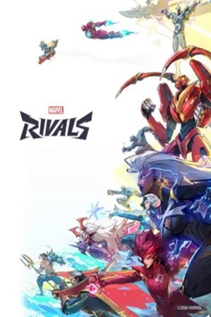
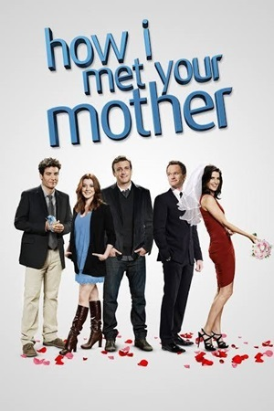

Background
Hello! I am currently a second year Business Administration Major. The reason for this being that I wanted to go into accounting(just in case it doesn't work out I am doing ITM as my minor). A fun fact about me is that I am a first-generation college student, and I am also trying to graduate a semester early (maybe two).
Favorite Game(currently)
So far I have enjoyed Marvel Rivals a ton. Currently I am ranked Celestial III and my main is Loki.
Favorite Show
The first time I ever watched this show was probably in 2015 and I have rewatched the show in its entirety around 5 times since then.